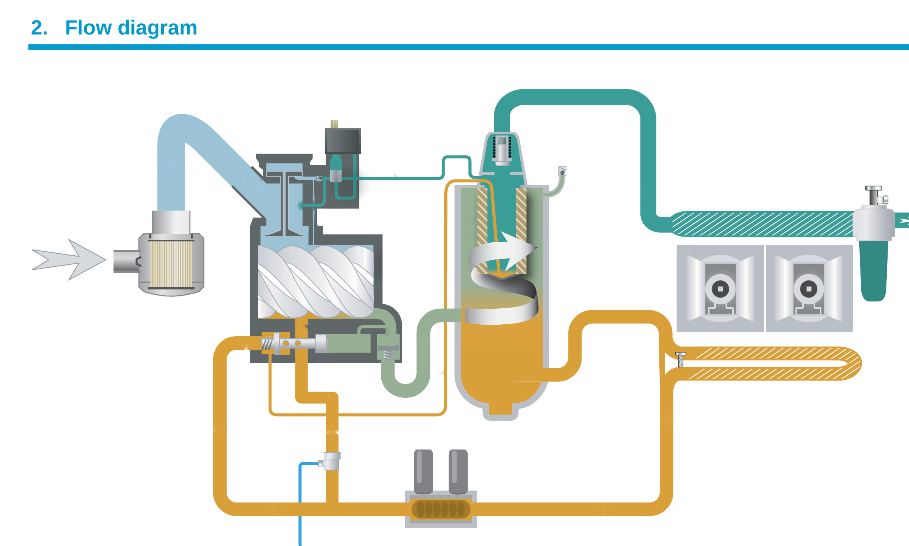

Diagrama del manual Atlas Copco (PM 2946 1198 00). Las flechas del propio diagrama se mueven en su dirección de flujo.

Fuente: Atlas Copco, Flow diagram, Air Cooled GA, PM 2946 1198 00, y Manual de instrucciones GA132 (APF132129), sección 2.2, diagrama de flujo GA90 a GA160. Diagrama de referencia, verifica siempre contra el manual del equipo específico.